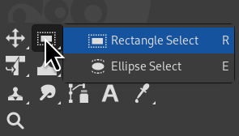
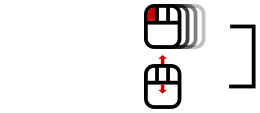
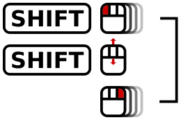
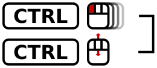

Índice
- 1. A Caixa de ferramentas
- 2. Ferramentas de seleção
- 3. Ferramentas de pintura
-
- 3.1. Características em comum
- 3.2. Dinâmicas
- 3.3. Ferramentas de pincel (lápis, pincel, aerógrafo)
- 3.4. Preenchimento com balde
- 3.5. Degradê
- 3.6. Lápis
- 3.7. Pincel
- 3.8. Borracha
- 3.9. Aerógrafo
- 3.10. Tinta
- 3.11. Pincel
- 3.12. Clonagem
- 3.13. Restaurar
- 3.14. Clonagem em perspectiva
- 3.15. Desfocar/Deixar nítido
- 3.16. Borrar
- 3.17. Sub/Super-exposição
- 4. Ferramentas de transformação
- 5. Other Tools
O GIMP provê uma caixa de ferramentas que tenta ser completa, de forma a permitir completar rapidamente várias tarefas básicas, tais como criar seleções ou desenhar vetores. As várias ferramentas contidas na Caixa de ferramentas do GIMP são discutidas em detalhes aqui.
(No caso de você estar curioso, na linguagem do GIMP, uma “ferramenta” é um meio de interagir com uma imagem que requer acesso à tela, ou seja, ou que permita que você indique o que você deseja fazer movendo e clicando o ponteiro do mouse na imagem, ou para mostrar interativamente os resultados de mudanças realizadas. Porém, se você quiser pensar nas ferramentas como uma serra, e na imagem como um tronco de madeira, não vai lhe fazer muito mal.)
![[Nota]](images/note.png)
|
Nota |
|---|---|
|
Veja mais em Janela principal: A caixa de ferramentas para ver uma visão-geral da caixa de ferramentas e dos seus componentes. |
GIMP has a diverse assortment of tools that let you perform a large variety of tasks. The tools can be thought of as falling into the following categories:
-
Ferramentas de seleção, que definem ou modificam uma parte da imagem que será afetada pelas próximas ações;
-
Ferramentas de pintura, que inserem cores e desenhos em partes da imagem;
-
Ferramentas de transformação, que alteram a geometria da imagem;
-
Color tools, which alter the colors in the image as a whole;
-
Other tools, which don't fall into the other categories.
Most tools can be activated by clicking on an icon in the Toolbox. By default, some tools are accessible only via the menus. Every tool can be activated from the menu (or the menu for some color tools). Most tools can also be activated from the keyboard using an accelerator key.
In the default setup, created when GIMP is first installed, not all tools show icons in the Toolbox: some tools are omitted. You can customize the set of tools that are shown in the Toolbox in the Toolbox Preferences.
There are two reasons you might want to do this: first, if you only rarely use a tool, it might be easier to find the tools you want if the distracting icon is removed; second, if you use tools that are not found in the toolbox by default, you might find it convenient to have icons for them easily available. In any case, you can always access any tool at any time using the or menu from the main menu.
Tool icons are grouped by default. Tool groups are marked with a small dark triangle at the bottom right corner of the icon. The group icon displayed is the last used tool in the group. Right click on the group icon to display the list of tools in the group.

You can get all tools displayed by unchecking the Use tool groups option in Seção 6.13, “Caixa de ferramentas”.
By default, the shape of the pointer changes when it is inside an image, to a shape that indicates which tool is active. You can change this behavior in the Pointers section of the Input Devices settings.
Figura 14.2. Foreground/Background Colors Area in the Toolbox

The Foreground/Background Colors area, marked with (3)
- Área de cores
-
The color area shows GIMP's current foreground and background colors, which are used for painting, filling, and many other operations. Clicking on either one of them brings up a color selector dialog that allows you to change to a different color.
- Cores padrão
-
Clicking on the small symbol in the lower left corner resets the foreground and background colors to black and white. Pressing the D key has the same effect.
- Swap Foreground/Background colors
-
Clicking on the double-headed arrow symbol swaps the foreground and background colors. Pressing the X key has the same effect.
![[Dica]](images/tip.png)
Dica Você pode clicar e arrastar uma dessas cores diretamente para uma camada: isso fará com que a camada seja preenchida inteiramente com essa cor.
Figura 14.3. Active Brush, Pattern and Gradient Area in the Toolbox
The Active Brush, Pattern and Gradient area, marked with (4)
By default, this area is not displayed. You can add this area through → → : Seção 6.13, “Caixa de ferramentas”.
Essa parte da caixa de ferramentas mostra o pincel, textura e degradê que estão selecionados no momento. Clicar em qualquer uma das três fará abrir uma janela em que você poderá mudá-las. Esta área não é visível por padrão, mas pode ser configurada no diálogo de Preferências/Caixa de ferramentas.
By default, this area is not displayed. You can add this area through → → : Seção 6.13, “Caixa de ferramentas”.
A thumbnail of the active image is displayed in this area. If you click on this thumbnail, the Images dialog is opened. This can be useful if you have many images on your screen.
If you use GIMP on a Unix-like operating system with the X Window System, you can also drag and drop the thumbnail to an enabled XDS file manager to directly save the corresponding image.

Se seu programa estiver configurado como o da maioria das pessoas, então ao ativar uma ferramenta a janela de opções da ferramenta irá aparecer abaixo da caixa de ferramentas. Se o seu programa não estiver configurado dessa forma, pelo menos deveria: é muito difícil usar as ferramentas de forma eficiente sem estar apto a alterar as suas opções. De qualquer forma, um clique-duplo no ícone de qualquer ferramenta faz a caixa de opções da ferramenta se tornar visível se estiver escondida.
|
|
Dica |
|---|---|
|
The Tool Options appear beneath the Toolbox in the default setup. If you lose it somehow, you can get it back by creating a new Tool Options dialog using → → and then docking it below the Toolbox. Alternatively you can double-click any tool button in the Toolbox as a quick way to open the Tool Options. If it appears in a different dock than the one you want, you can drag it to your preferred dock. See the section on Dialogs and Docking if you need help moving the Tool Options. |
Cada ferramenta tem a suas próprias opções. As escolhas que você faz nas ferramentas serão mantidas durante a sessão, até que você as altere novamente. Na verdade, as opções de ferramentas são mantidas de sessão em sessão. A persistência de uma opção de ferramenta entre os usos do programa as vezes pode causar alguma irritação: uma ferramenta se comporta de uma maneira estranha, e você não consegue imaginar o porquê, já que você não se lembra que você ativou alguma opção incomum na última vez que você a usou, há duas semanas atrás.
Na parte inferior da janela de opções de ferramentas, existem quatro botões:
-
 Save Tool Preset…
Save Tool Preset…
-
This button allows you to save the settings for the current tool, so that you can restore them later. It brings up the Seção 7.2, “Diálogo de Definições de ferramentas” allowing you to give a name for the new preset. When you Restore options, only saved presets for the active tool are shown, so you need not worry about including the name of the tool when you assign a name here.
-
 Restore Tool Preset…
Restore Tool Preset…
-
This button allows you to restore a previously saved preset of options for the active tool. If no presets have ever been saved for the active tool, the button will be disabled. Otherwise, clicking it will bring up a menu showing the names of all saved option sets: choosing a menu entry will apply those settings.
-
 Delete Tool Preset
Delete Tool Preset
-
Este botão permite que você remova um conjunto de opções previamente salvo para a ferramenta ativa no momento. Se nenhuma configuração foi salva anteriormente para a ferramenta ativa, então o botão ira exibir o nome da ferramenta. Caso contrário, clicar sobre o botão irá mostrar um menu com os nomes de configurações salvas: a configuração selecionada será removida.
-
 Reset to default values
Reset to default values
-
This button resets the options for the active tool to their default values. If you hold the Shift key while pressing the Reset button, the options for all tools will be reset to their default values.
In addition to the commands for the above buttons, the Tool Options tab menu has an extra submenu:
- Edit Tool Preset
-
This submenu shows a list of presets for the active tool that you can edit. Selecting one of them will open the Tool Presets Editor with that tool preset loaded. From there you can edit the preset, unless it is one of the default presets that come with GIMP.
Below we will explain the interaction with sliders and the mouse scroll-wheel.
- Novos controles deslizantes
-
You can use multiple modifiers with either left-click or mouse wheel scrolling:
Tabela 14.1. Interaction with the Slider Widget
Mouse / key combination
Action 
Change the value to what's under the pointer 
Change the value using the default increment 
Shift + or
Change the value using smaller increment 
Ctrl +
Change the value using larger increment 
Enter numeric input mode, do not select the value Enter numeric input mode, select the value Hint: Any left-click interaction enables numeric input mode.
Once you have set the value approximately, you can fine-tune it using the + and - buttons at the right of the slider.
A área do valor na área deslizante trabalha como um editor de texto: lá você pode editar o valor ou inserir diretamente um novo valor.
For some options, you can drag the pointer outside the tool dialog. For example with the size slider, you can get the maximum value (10000) so.
- Mouse Scroll-Wheel actions on canvas
-
When using tools, you can use the mouse scroll-wheel, in combination with various modifiers, to do useful things with the tool options of the selected tool:
-
Alt + Mouse-wheel: increase/decrease opacity
-
Shift+Primary + Mouse-wheel: increase/decrease aspect ratio
-
Shift+Alt + Mouse-wheel: increase/decrease angle
-
Primary+Alt + Mouse-wheel: increase/decrease size
-
Shift+Primary+Alt + Mouse-wheel: increase/decrease spacing
Note: the Primary modifier is usually Ctrl or Cmd, depending on your platform.
-